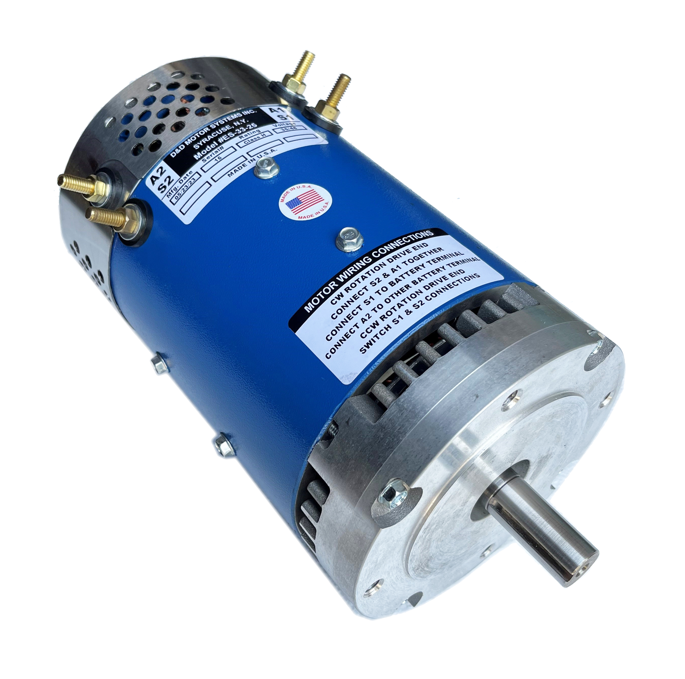
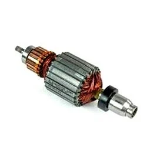
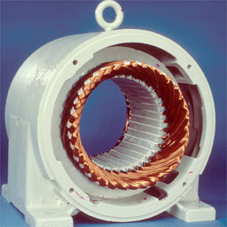
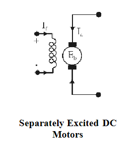
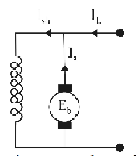
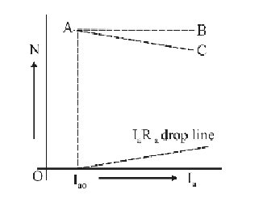
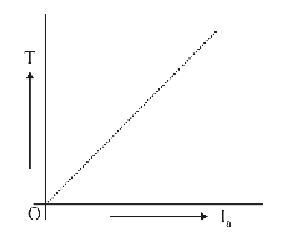
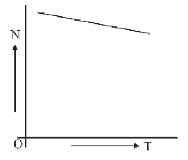
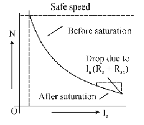

Regenerative Charging & Braking System
DC Motor:
The principle of conversion of electrical energy into mechanical energy by electromagnetic means was demonstrated by the British scientist Michael Faraday in 1821 and consisted of a free-hanging wire dipping into a pool of mercury. A permanent magnet was placed in the middle of the pool of mercury. When a current was passed through the wire, the wire rotated around the magnet, showing that the current gave rise to a circular magnetic field around the wire. The DC motor are very useful where wide range of speed and good speed regulation is required such as electric traction.
Selection of DC Motor:
Choosing DC motor and associated equipment for a given application requires consideration of several factors.
Speed Range :
If field control is to be used, and a large speed range is required, the base speed must be proportionately lower and the motor size must be larger. If speed range is much over 3:1, armature voltage control should be considered for at least part of the range. Very wide dynamic speed range can be obtained with armature voltage control. However, below about 60% of base speed, the motor should be DC rated or used for only short periods.
Speed Variation with Torque :
Applications requiring constant speed at all torque demands should use a shunt- wound DC motor. If speed change with load must be minimized, a DC motor regulator, such as one employing feedback from a tachometer, must be used. When the DC motor speed must decrease as the load increases, compound or series-wound DC motors may be used or a DC motor power supply with a drooping volt-ampere curve could be used with a shunt-wound DC motor.
-- Reversing :
This operation affects power supply and control, and may affect the DC motor's brush adjustment, if the DC motor cannot be stopped for switching before reverse operation. In this case, compound and stabilizing DC motor windings should not be used, and a suitable armature-voltage control system should supply power to the DC motor.
-- Duty Cycle :
Direct current motors are seldom used on drives that run continuously at one speed and load. Motor size needed may be determined by either the peak torque requirement or heating.
-- Peak torque :
The peak torque that a DC motor delivers is limited by that load at which damaging commutation begins. DC motor brush and commutator damage depends on sparking severity and duration. Therefore, the DC motor's peak torque depends on the duration and frequency of occurrence of the overload. DC motor peak torque is often limited by the maximum current that the power supply can deliver.
DC motors can commutate greater loads at low speed without damage. NEMA standards specify that machines powered by DC motors must deliver at least 150% rated current for 1 minute at any speed within rated range, but most DC motors do much better.
-- Heating :
DC motor temperature is a function of ventilation and electrical/mechanical losses in the machine. Some DC motors feature losses, such as core, shunt- field, and brush- friction losses, which are independent of load, but vary with speed and excitation.
The best method to predict a given DC motor's operating temperature is to use thermal capability curves available from the DC motor manufacturer. If curves are not available, DC motor temperature can be estimated by the power - loss method. This method requires total losses versus load curve or an efficiency curve.
For each portion of the duty cycle, power loss is obtained and multiplied by the duration of that portion of the cycle. The summation of these products divided by the total cycle time gives the DC motor's average power loss. The ratio of this value to the power loss at the motor rating is multiplied by the DC motor's rated temperature rise to give the approximate temperature rise of the DC motor when operated on that dutycycle.
Direct current machines are energy transfer devices. These machines can function as either a motor or a generator. DC motors and generators have the same basic construction, differing primarily in the energy conversion.
To better understand the operation and construction of DC machines, a few basic terms and purpose of each of the following components of a DC machine:
1. Armature:
The purpose of the armature is to provide the energy conversion in a DC machine. In a DC generator, the armature is rotated by an external mechanical force, such as a steam turbine. This rotation induces a voltage and current flow in the armature. Thus, the armature converts mechanical energy to electrical energy. In a DC motor, the armature receives voltage from an outside electrical source and converts electrical energy into mechanical energy in the form of torque.
2. Rotor:
The purpose of the rotor is to provide the rotating element in a DC machine. In a DC generator, the rotor is the component that is rotated by an external force. In a DC motor, the rotor is the component that turns a piece of equipment. In both types of DCmachines, the rotor is the armature.
3. Stator:
The stator is the part of a motor or generator that is stationary. In DC machines, the purpose of the stator is to provide the magnetic field. The stator is provided by a permanent magnet. Stator with Yoke
4. Field:
The purpose of the field in a DC machine is to provide a magnetic field for producing either a voltage (generator) or a torque (motor). The field in a DC machine is produced by either a permanent magnet or an electromagnet. Normally, electromagnets are used because they have an increased magnetic strength, and the magnetic strength is more easily varied using external devices. In Figure 4 and 5 the field is provided by the stator.
Principle of DC Machine :
It is based on the principle that when a current-carrying conductor is placed in a magnetic field, it experiences a mechanical force whose direction is given by Fleming's Left-hand rule and whose magnitude is given by:
Force, F = BxIxL
Where, B is the magnetic field in weber/m2, I is the current in amperes and L is the length of the coil in meter.
The force, current and the magnetic field are all in different directions. Poles of a magnet, an upward force will move one wire up and a downward force will move the other wire down. So the wire does not get twisted. This arrangement also makes sure that at the current always passes down on the right and back on the left so that the rotation continues. This if electric current flows through two copper wires that are between this how a simple electric motor is made.
A DC machine can operate as a motor or as a generator. This kind of machine is usually realized as an internal rotor/external-pole machine. The ring-coat-shaped housing of the machine is also used as a magnetic yoke for the magnetic field through the armature and poles. The excitation winding (field winding) is located directly on the main poles of the stator. A current that flows in this winding generates the main field. Since the machine is operated with DC current the magnetic field in the stator is constant and so all iron parts of the stator can be made of massive material. Nevertheless the main poles and the commutating poles are often laminated because of easier manufacture. Modern DC machines, used in closed-loop controlled drives, with a fast change in armature current and main field consist of one completely laminated magnetic circuit. A massive iron construction would strongly in sequence the dynamics and the efficiency of the machine due to the appearance of eddy currents. The rotating part of the machine holds on its shaft the armature with the commutator. Since the alternating flux flows through the armature, iron parts must be built from laminated mutually insulated and slotted magnetic steel sheets. The coils of the armature winding are placed in the slots; their ends are connected to the commutator segments. The current is fed into the commutator by carbon brushes. As the rotor revolves, conductors revolve with it. The brushes contact the commutator segments.
Operating behaviour of the DC machine:
In sequence This result in a constant direction of the armature held due to the commutation. The magnetic flux of the armature is ideally vertical to the direction of the main held. Due to this coagulation there is no induced voltage at the turn connected to brushes. This area is called the neutral zone. When the load of the machine increases, the armature held is no more collectible and causes a shift of the neutral zone because of the superposition of main field and Armature field: The main field is distorted and (because of the effects of saturation) weakened. This interference between the main field and the armature cross field, which causes a loss of torque, can be reduced using a compensating winding in the stator of the DC machine. The conductors of this compensating winding are arranged in axial slots of the main pole. The compensating winding is connected in series to the armature, so that the total magnetic flux under one pole with compensating conductors and armature conductors create no magnetic field transverse to the main pole. The shift of the neutral zone also causes brush are because commutation doesn't take place in the neutral zone anymore: the windings carry an induced voltage greater than zero when short-circuited by the commutator. This results in faster deterioration of the commutator. Large machines are therefore equipped with additional commutating poles. Their coils are connected in series to the armature winding.
The commutating poles generate a counter field in the area of the short-circuited armature conductor in such a way that voltages induced by this field compensate the ones resulting from the commutation of the armature currents, so that a commutating free of sparks is achieved.
Torque of DC motor :
When a current carrying current is placed in the magnetic field a force is exerted or it exerts turning movement or torque Fr. This torque is produced due to electromagnetic effect hence is called electromagnetic torque.
Since,
V = Eb + IaRa
Multiplying both side by Ia, we get,
VIa = EbIa + Ia2Ra
i.e., Total electrical power = Mechanical power developed.
Supplied to the armature by the armature = Losses due to armature resistance. So, we can say that
Pm = Mechanical power developed by the armature = Fb Ia
Also the mechanical power rotating armature can be given in terms of torque T and speed n.
i.e., Pm = 2 nT
Where, n in rps, T in newton-meter. Hence,
2 nT = Eb Ia or T = Eb Ia / 2n
But Eb = ZNP/60A, where N, speed in rpm. Or N/60 = n speed in rps.
Eb = Zn P/A
So torque, T = (ZP/2 A)Ia
For a particular DC motor, the no of poles (P); no of conductor per parallel path.(Z/A) are constant.
T = K Ia, where K=ZP/2 A
Thus we conclude that torque produced in the armature is directly proportional to flux per pole and armature current, moreover, the direction of electromagnetic torque developed in the armature depends upon the current in armature conductors. If either of the two is reversed the direction of torque produced is reversed and hence the direction of rotation. But when both are reversed and direction of torque does not change.
DC motor classification:
DC motor can be classified into two ways on the basis of their field execution as:
Separately exited DC motor:
The conventional diagram of separately excited DC motor is shown in figure below, its voltage equation will be;
Eb = V-Ia Ra - 2Vb
A DC motor whose field winding is supplied current from an external DC source.
Self Excited DC Motor :
A DC motor whose field winding is supplied current by the motor itself is called self exited DC motor. Self excited DC motors can be divided into three classes, designated according to the method of connecting the armature and the field windings as:
1. Shunt-Wound Motors:
This type of motor runs practically a constant speed, regardless of the load. It is the type generally used in commercial practice and is usually recommended where starting conditions are not usually severs. Speed of the shunt-wound motors may be regulated in two ways: first, by inserting resistance in series with the armature, thus decreasing speed: and second, by inserting resistance in the field circuit, the speed will vary with each change in load: in the latter, the speed is practically constant for any setting of the controller. This latter is the most generally used for adjustable-speed service, as in the case of machine tools. The shunt motor is probably the most common DC motor used in industry today. Components of the shunt motor are the armature, labeled A1 and A2, and the field, labeled F1 and F2. The coils in the shunt field are composed of many turns of small wire, resulting in low shunt field current and moderate armature current. This motor provides starting torque that varies with the load applied and good speed regulation by controlling the shunt field voltage. If the shunt motor loses it’s field it will accelerate slightly until EMF rises to a value sufficient to shut off the torque producing current. In other words, the shunt motor will not destroy itself if it loses its field, but it won’t have the torque required to do the job it was designed for.
Some of the common uses of the shunt motor are machine shop lathes, and industry process lines where speed and tension control are critical.
Important relations in DC Shunt Wound Motor is:
Ish = V/Rsh
Ia = IL - Ish
Eb = V- Ia Ra -2Vb
2. Series -Wound Motors:
This type of motor speed varies automatically with the load, increasing as the load decreases. Use of series motor is generally limited to case where a heavy power demand is necessary to bring the machine up to speed, as in the case of certain elevator and hoist installations, for steel cars, etc. Series- wound motors should never be used where the motor can be started without load, since they will race to a dangerous degree. Components of a series motor include the armature, labeled A1 and A2, and the field, S1 and S2. The same current is impressed upon the armature and the series field
The coils in the series field are made of a few turns of large gauge wire, to facilitate large current flow. This provides high starting torque, approximately 2¼ times the rated load torque. Series motor armatures are usually lap wound. Lap windings are good for high current, low voltage applications because they have additional parallel paths for current flow. Series motors have very poor speed control, running slowly with heavy loads and quickly with light loads. A series motor should never drive machines with a belt. If the belt breaks, the load would be removed and cause the motor to over speed and destroy itself in a matter of seconds.
Common uses of the series motor include crane hoists, where large heavy loads will be raised and lowered and bridge and trolley drives on large overhead cranes. The series motor provides the starting torque required for moving large loads.
3. Compound-Wound DC Motors:
A combination of the shunt wound and series wound types combines the characteristics of both. Characteristics may be varied by varying the combination of the two windings. These motors are generally used where severe starting conditions are met and constant speed is required at the same time.
When comparing the advantages of the series and shunt motors, the series motor has greater torque capabilities while the shunt motor has more constant and controllable speed over various loads. These two desirable characteristics can be found in the same motor by placing both a series field and shunt field winding on the same pole. Thus, we have the compound motor.
The compound motor responds better to heavy load changes than a shunt motor because of the increased current through the series field coils. This boosts the field strength, providing added torque and speeds.
Common uses of the compound motor include elevators, air compressors, conveyors, presses and shears. Compound motors can be operated as shunt motors by disconnecting the series field. Many manufacturing process lines are designed this way.
The reason being that, most of the shelf motors are compound motors, and the series field can always be connected later to provide additional torque, if needed.
Compound motors can be connected two ways, cumulatively and differentially. When connected cumulatively, the series field is connected to aid the shunt field, providing faster response than a straight shunt motor. When connected differentially, the series field opposes the shunt field. Differentially connected compound motors are sometimes referred to as “suicide motors,” because of their penchant for self destruction. If perhaps, the shunt field circuit were to suddenly open during loading, the series field would then assume control and the polarity of all fields would reverse.
This results in the motor stopping, and then restarting in the opposite direction. It thenoperates as an unloaded series motor and will destroy itself. Differentially connected motors can also start in the opposite direction if the load is too heavy. Therefore, it is seldom used in industry.
Speed Control of DC Motor:
Speed of the DC motor is given by the relation: N = V – IA RA / Ф
Where,
N = Speed of the DC motor.
V = Applied voltage in DC motor
Ф = Flux per pole of DC motor.
IA = Armature current in DC motor.
RA = Armature resistance of DC motor.
From the above equation it is clear that the speed of DC motor can be controlled:
By varying flux per pole this is known as flux or field control method.
By varying the armature drop that is by varying the resistance of the armature circuit this is known as armature controlled method.
By varying the applied voltage this is known as voltage controlled method.
1. Field Control Method :
The flux produced by the shunt winding depend upon the current flowing through it, when a variable resistance is connected in series with the field winding the shunt field current is reduced and hence the flux consequently the motor run at the speed higher than the normal speed. The amount of increase in speed depends of the variable resistance. This method is more economical as very little power is wasted in the shunt field variable resistance due to relatively small current.
2. Armature Control Method :
In a shunt motor flux is constant when the applied voltage and shunt field resistance are constant therefore the speed of the motor is directly proportional to the induced emf the value of induced emf depend upon the drop in armature circuit when additional resistance is connected in series with the armature circuit induced emf is reduced and hence the speed thus the motor runs at a speed lesser than the normal speed. This method is not economical as large power is wasted in the control resistance since it carries full armature current.
3. Voltage Controlled Method :
In this motor the voltage across the motor can be changed by connecting them in series or in parallel. This is widely used in electric traction. When the motor are connected in series low speed are obtained and when they are connected in parallel high speed (nearly 4 times to that of the first case) are obtained.
Advantages:
The greatest advantage of DC motors may be speed control. Since speed is directly proportional to armature voltage and inversely proportional to the magnetic flux produced by the poles, adjusting the armature voltage and/or the field current will change the rotor speed. Today, adjustable frequency drives can provide precise speed control for AC motors, but they do so at the expense of power quality, as the solid- state switching devices in the drives produce a rich harmonic spectrum. The DC motor has no adverse effects on power quality.
Drawbacks:
- Power supply, initial cost, and maintenance requirements are the negatives associated with DC motors.
- Rectification must be provided for any DC motors supplied from the grid. It can also cause power quality problems. '
- The construction of a DC motor is considerably more complicated and expensive than that of an AC motor, primarily due to the commutator, brushes, and armature windings. An induction motor requires no commutator or brushes, and most use cast squirrel-cage rotor bars instead of true windings, two huge simplifications.
- Maintenance of the brush / commutator assembly is significant compared to thatof induction motor designs.
- In spite of the drawbacks, DC motors are in wide use, particularly in niche applications like cars and small appliances.
Application:
- Industrial applications use DC motors because the speed-torque relationship can be varied to almost any useful form-- for both DC motor and regeneration applications in either direction of rotation. Continuous operation of DC motors is commonly available over a speed range of 8:1. Infinite range (smooth control down to zero speed) for short durations or reduced load is also common.
- DC motors are often applied where they momentarily deliver three or more times their rated torque. In emergency situations, DC motors can supply over five times rated torque without stalling (power supply permitting).
- Dynamic braking (DC motor-generated energy is fed to a resistor grid) or regenerative braking (DC motor-generated energy is fed back into the DC motor supply) can be obtained with DC motors on applications requiring quick stops, thus eliminating the need for, or reducing the size of a mechanical brake.
- DC motors feature a speed, which can be controlled smoothly down to zero, immediately followed by acceleration in the opposite direction-- without power circuit switching and DC motors respond quickly to changes in control signals due to the DC motor's high ratio of torque to inertia.
- The DC machine is used as a motor when there is a demand for a continue regulation of rotational speed. Although there is a disadvantage due to the fact that brushes are not without friction, it requires considerably less cost for the supply equipment, which makes the DC machines sometimes more economical than three-phase drives.The Application areas of a DC machine are electric rolling mill drives,conveyor drives or machine tools. In the last application, the machine isexcited with permanent magnets instead of using electrical excitation inorder to reduce the size of construction and losses in the excitationcircuit. The DC generator is used as a Leonard generator, as anexcitation machine for synchronous generators or as permanent excitedtachometer generator.
Characteristic of DC Shunt Motor:
The performance of a DC motor can be easily judge from its characteristic curve known as motor characteristic. Following characteristics obtained from this:
1. Speed and Armature Current Characteristic:
It is the curve drawn between the speed and armature current, known asspeed characteristic. If the armature drop is negligible the speed of the motorwill remain constant for all the value of load as shown by the dotted line ABbut as the armature current increase due to increase of load armature dropincrease and speed of the motor decreases as shown by the line AC. Moreoverthe characteristic curve does not start from zero because a small armaturecurrent called no load current is necessary to maintain rotation of the motorat no load. Since there is no appreciable change in the speed of the DC motorfrom no load to full load as it is considered to be the constant speed motor thismotor is best suited where almost speed constant is required.
2. Torque and Armature Current Characteristic :
It is the curve drawn between the torque develop and armature current, known as electrical characteristic.
We know that T = I Ф
Since flux is constant T = I
Hence the electrical characteristic is a straight line passing from the origin as shown in graph above, it is clear from the characteristic curve that the large current is required at the start if machine is on heavy load thus shunt motor should never be start on load.
3. Speed and Torque Characteristic:
It is the curve drawn between the torque develop and speed, known as mechanical characteristic. It is derived from the first two characteristic, when load torque increase armature current increase but speed decrease slightly, thus with the increase in load or torque the speed decrease slightly as shown in graph above.
Characteristic of Series Motors :
In this motor the series field winding carries the armature current therefore, the flux produced by the series field winding is proportional to the armature current before magnetic saturation, but after magnetic saturation flux is constant.
1. Speed and Armature Current Characteristic:
It is the curve drawn between the speed and armature current. It is known as speed characteristic.
We know that,
N ∝ E b /Ф
Where,
Eb = V – IA (RA + RSE)
When armature currant increases the induced emf decrease due to IA (RA + RSE) drop, whereas flux increase as Ф ∝ IA before magnetic saturation. However under normal condition IA (RA + RSE) drop is quite small and may be neglected.